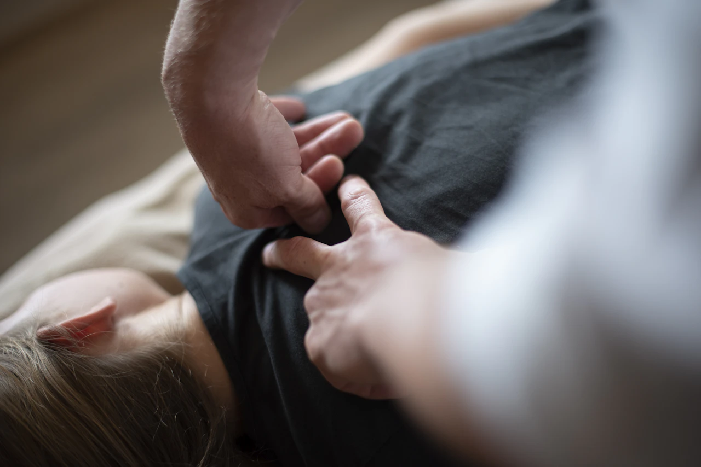
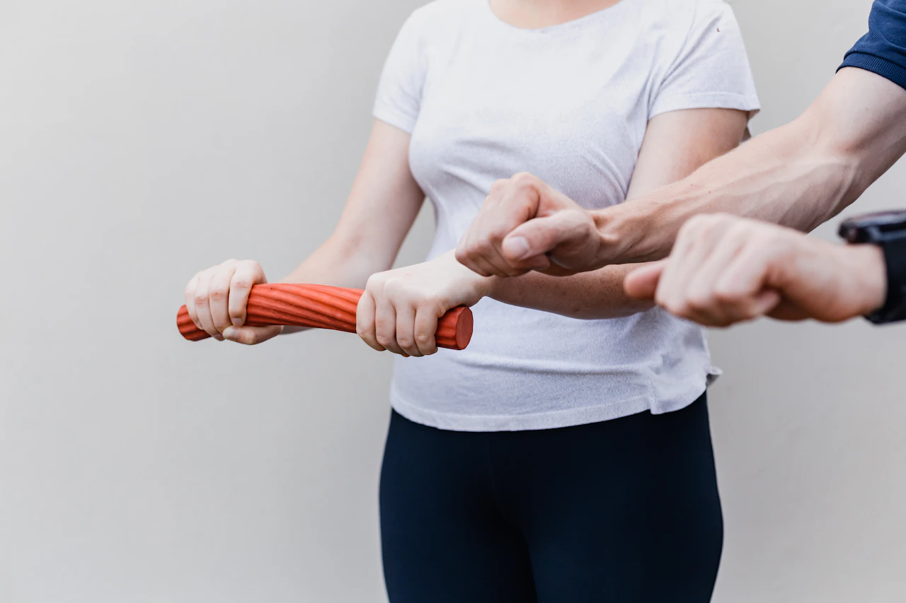
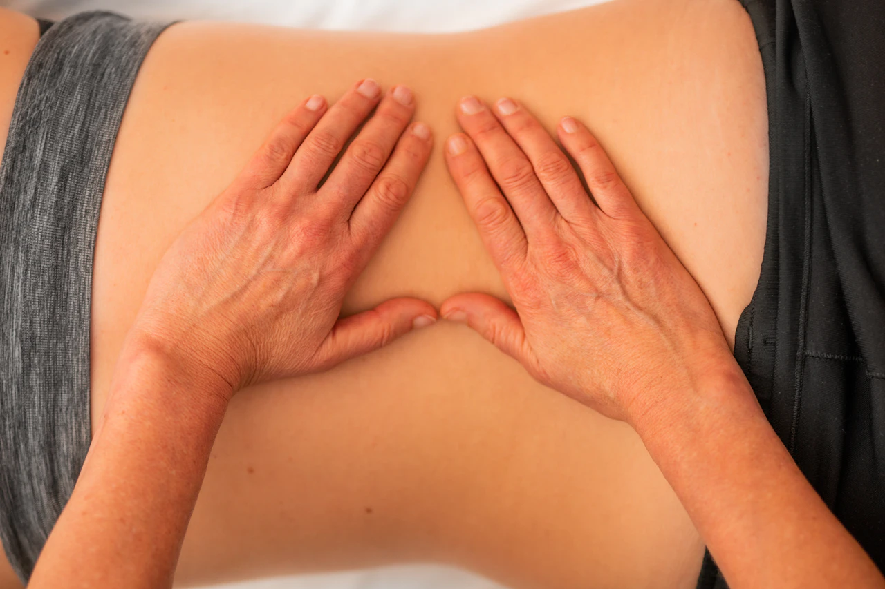
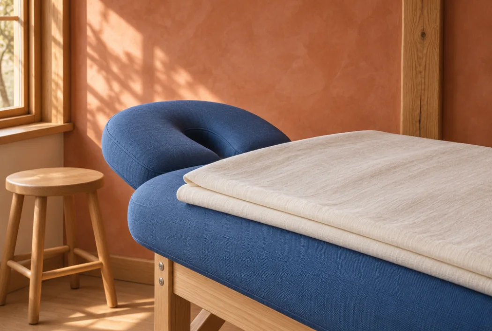

Initial osteopathy consultation
For a first appointment. Tell us when the discomfort began, what makes it easier or harder, and what you want to get back to.
Show us what feels difficult, like reaching for a mug or tying your shoes. Your osteopath will assess how you move and explain what might help.

Tell us what brings you in. Your osteopath will listen, assess how you move and discuss your options.
Request a first visit
Explore a movement that feels stiff or uncomfortable, from turning your neck to reaching overhead.
Request an assessment
Revisit a movement from your last session and talk through what has changed.
Request a follow-up
Have a question about access, or need to change your appointment? Get in touch with reception before you travel.
Contact reception
For a first appointment. Tell us when the discomfort began, what makes it easier or harder, and what you want to get back to.

For a particular movement that feels stiff or uncomfortable, such as reaching for a shelf or turning to look behind you.

For returning patients. Review what has changed since your last appointment and discuss the next step with your osteopath.
Tell us where you feel discomfort and which everyday activities it gets in the way of.
Your osteopath explains each part of the assessment and asks your permission before hands-on care.
Discuss what you noticed together, ask questions and agree on what comes next.
If this is your first visit, choose the initial osteopathy consultation . You’ll have time to discuss what brings you in.
Your osteopath asks how the problem affects your day, then looks at how you move. They may ask to feel how a muscle or joint moves. They will explain what they have noticed and talk through the options with you.
Choose clothing you can move comfortably in and bring any questions you’d like to discuss.
Choose a preferred date and part of the day. Reception will check the diary and email your appointment time. A request is pending until reception confirms it.